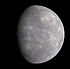
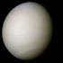
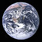
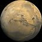
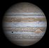
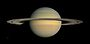
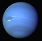
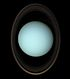

Planets are both large enough to have achieved hydrostatic equilibrium
and have cleared their neighborhoods of similar objects.
There are four terrestrial planets and four gas giants in the Solar System.
The latter combined comprise more than 99 percent of
the mass in the Solar System excluding that of the Sun.
I chose to put the planets into a rows so that I could provide a few stats on each planet by column.
I picked the image just to make the table more engaging (wiki used the pics as th by contrast).
Each stat gets a separate cell for readability. Just a few stats were used to keep the table from getting busy.
I also kept the even-row formatting to make the rows stand out. I chose to center the table to balance
the amount of space on the page. I chose white text for contrast against the black starfield
(just because the starfield is cool for a "Planets" table)
| Picture | Name | Mean Distance to the Sun / km | Orbital Period / years |
|---|---|---|---|
|  | Mercury | 57,909,175 | 0.2408467 |
|  | Venus | 108,208,930 | 0.61519726 |
|  | Earth | 149,597,890 | 1.0000174 |
|  | Mars | 227,936,640 | 1.8808476 |
|  | Jupiter | 778,412,010 | 11.862615 |
|  | Saturn | 1,426,725,400 | 29.447498 |
|  | Neptune | 2,870,972,200 | 84.016846 |
|  | Uranus | 4,498,252,900 | 164.79132 |
| Source: Wikipedia | |||